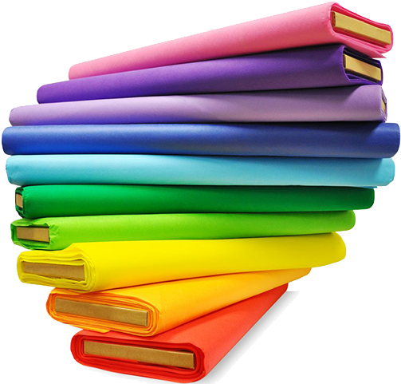

Pantone Lavanderia
Tornando o mundo mais colorido desde 1989
Fundada há 33 anos pelos irmãos Adail, Hamilton e Roselita Medeiros, a Pantone realiza tingimentos e lavagens industriais por todo o Brasil, tendo sua sede em Realengo, no Rio de Janeiro.

Estabelecida desde os anos 80, a lavanderia começou apenas como uma forma dos três irmãos poderem se reunir e trabalhar juntos, porém logo cresceu para se tornar uma das maiores lavanderias da cidade do Rio de Janeiro!
Deseja ter suas roupas lavadas com capricho e qualidade? Ou possui uma roupa muito querida que acabou manchando? Não se preocupe, pois na Pantone sua satisfação é a prioridade!